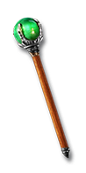

Each extra projectile adds 35% to the volley's damage; each point adds 1% more, up to +10% from items. It needs +# to Projectiles.
+1% per point+#% Damage per Extra ProjectileApplies to the supported skills below.
How extra projectiles work →22 supported skills
Amazon
Sorceress
Necromancer
Druid
Assassin
Warlock
Get this effect
Runewords
Naphtha
Ral → Fal → Mal
3 sockets · Any missile weapon
+13-15% Damage per Extra ProjectileRequired level 49Cloudburst
Ort → Shael → Um
3 sockets · Bow / Crossbow / Sword / Staff / Scepter / Knife
+10% Damage per Extra ProjectileRequired level 47Trueflight
Ko → Fal
2 sockets · Graven Arrows / Graven Bolts
+5% Damage per Extra ProjectileRequired level 41Arrowfall
Ko → Um → Ist
3 sockets · Graven Arrows / Graven Bolts
+10% Damage per Extra ProjectileRequired level 51Firmament
Vot → Ber → Jah
3 sockets · Graven Arrows / Graven Bolts
+10% Damage per Extra ProjectileRequired level 65Undertow
Tal → Ort → Fal
3 sockets · Graven Arrows / Graven Bolts
+10-15% Damage per Extra ProjectileRequired level 41Magic & rare modifiers



Weighted
Magic & rare prefix
+5-8% Damage per Extra Projectile- Missile Weapon
- Javelin
- Orb
- Staff
- Wand
- Hand to Hand
- Amulet
Leaden
Magic & rare prefix
+9-12% Damage per Extra Projectile- Missile Weapon
- Javelin
- Orb
- Staff
- Wand
- Hand to Hand
- Amulet
Hailing
Magic & rare prefix
+13-15% Damage per Extra Projectile- Missile Weapon
- Javelin
- Orb
- Staff
- Wand
- Hand to Hand
- Amulet
Equipment

Rogue's Keepsake
Short Bow
+5% Damage per Extra ProjectileRequired level 12
Vizjerei Lens
Glowing Orb
+8% Damage per Extra ProjectileRequired level 28
Viz-Jun's Last Spark
Amulet
+10% Damage per Extra ProjectileRequired level 88
Gale Binder
Bramble Mitts
+10% Damage per Extra ProjectileRequired level 90
The Unwritten Storm
Graven Arrows
+10% Damage per Extra ProjectileRequired level 54
The Bell of Bone
Graven Bolts
+10% Damage per Extra ProjectileRequired level 90Oil & gem crafts


Azure Oil
+ Perfect Amethyst
- Amulet / Bow / Crossbow / Hand to Hand / Orb / Staff / Wand
- +13-15% Damage per Extra Projectile